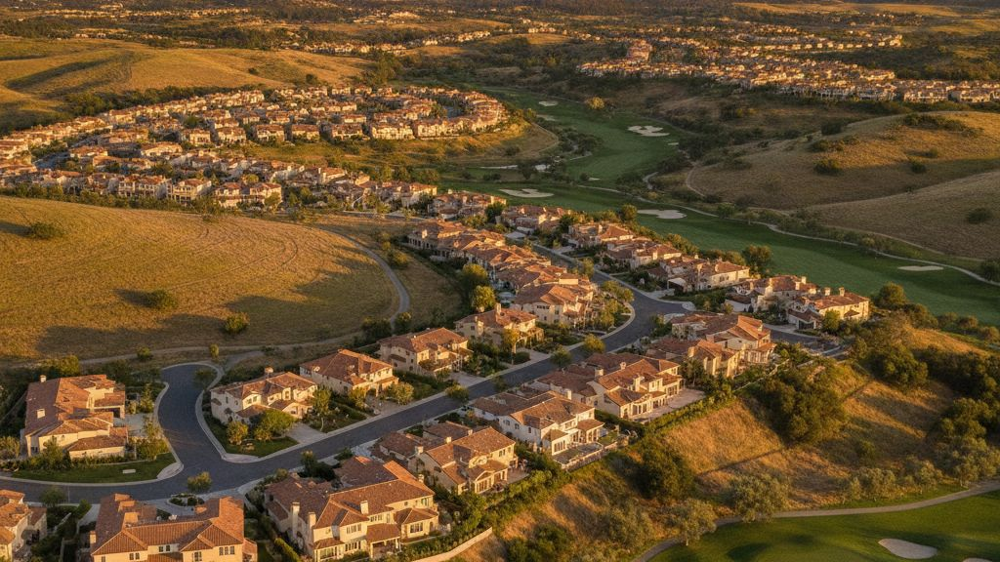
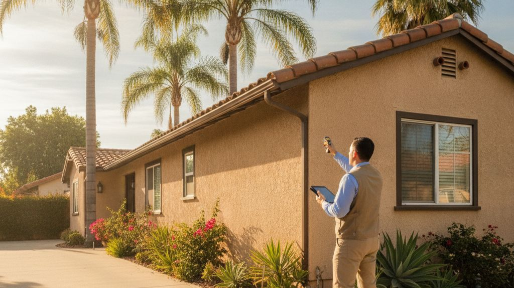
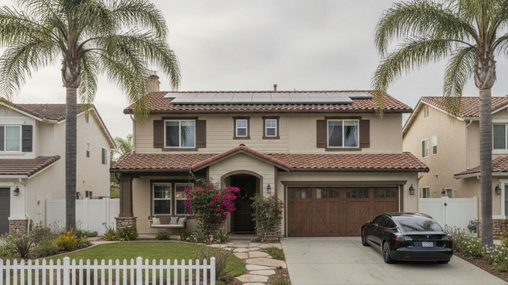

San Diego County · California Certified Residential Appraiser
Independent Home Appraisals for All of San Diego County
From Oceanside to the border and from La Jolla to Borrego Springs, Brian Ward Appraisal provides court-ready, IRS-ready residential valuations for estates, trusts, divorces, bankruptcies, tax matters and private decisions.
- 2004appraising since
- 7,000+assignments
- 108communities
- $299starting fee
Where the work happens
Eleven Regions, One Appraiser Who Knows Them
Housing here does not behave as a single market. A bluff-top cottage in Leucadia, a 1960s ranch home in Clairemont and a cabin above Julian each need different comparables and different judgment. Choose a region to see every community it includes.
 Central City of San Diego14 communities
Central City of San Diego14 communities San Diego Beach & Bay Neighborhoods6 communities
San Diego Beach & Bay Neighborhoods6 communities Mid-City Mesas & Canyons8 communities
Mid-City Mesas & Canyons8 communities
Northern San Diego & the I-15 Corridor13 communities Southeastern San Diego & the Border6 communitiesNorth County Coast9 communitiesNorth County Inland10 communities
Southeastern San Diego & the Border6 communitiesNorth County Coast9 communitiesNorth County Inland10 communities North County Groves & Ranchland7 communities
North County Groves & Ranchland7 communities East County14 communities
East County14 communities South Bay & Coronado7 communities
South Bay & Coronado7 communities Mountains, Backcountry & Desert14 communities
Mountains, Backcountry & Desert14 communities
How an assignment runs
Clear Scope, Firm Quote, No Surprises
- Tell me what the appraisal is forIntended use drives everything else: the effective date, the type of report and the level of detail. A two-minute conversation settles the scope.
- Receive a quote and a dateYou receive the fee, the report type and a delivery estimate before anything is scheduled. Nothing proceeds until you approve it.
- Inspection or records reviewFor standard reports, the home is measured, photographed and observed inside and out. Desktop work begins immediately from records and listing data.
- Market research and analysisComparable sales are selected from the same market segment and adjusted for differences in size, condition, location, view and date of sale.
Appraisal services
Valuations for Legal, Tax and Family Decisions
Every service below is a private appraisal, ordered by you or your attorney rather than a lender, with the effective date and scope set around your matter.
 Date of Death AppraisalsA value pinned to the day an owner died, for trustees, executors and the stepped-up basis their CPA will rely on.
Date of Death AppraisalsA value pinned to the day an owner died, for trustees, executors and the stepped-up basis their CPA will rely on.
Divorce AppraisalsAn impartial value for the family residence or rental property so a settlement can move forward on solid ground. Estate & Trust AppraisalsFair market value for trust funding, distribution and probate inventories, written for fiduciaries and their counsel.
Estate & Trust AppraisalsFair market value for trust funding, distribution and probate inventories, written for fiduciaries and their counsel. Bankruptcy AppraisalsSupportable home values for Chapter 7 and Chapter 13 schedules, exemption planning and trustee review.
Bankruptcy AppraisalsSupportable home values for Chapter 7 and Chapter 13 schedules, exemption planning and trustee review. Expert Witness & Litigation SupportAppraisal testimony and consulting for disputes over value in court, arbitration or mediation.
Expert Witness & Litigation SupportAppraisal testimony and consulting for disputes over value in court, arbitration or mediation.- Pre-Purchase AppraisalsLearn what a house is actually worth before you write the offer, especially on unusual or off-market properties.
 Pre-Sale AppraisalsPrice a listing from evidence, not hope, and hand buyers a value that has already been documented.
Pre-Sale AppraisalsPrice a listing from evidence, not hope, and hand buyers a value that has already been documented.- Tax AppraisalsValues for assessment appeals, gift-tax returns and other filings where a tax authority wants proof.
- Family Transaction AppraisalsA documented fair price when a home is sold, gifted or refinanced between relatives.
 Insurance Dispute AppraisalsIndependent market-value evidence when a carrier's numbers and the homeowner's numbers do not agree.
Insurance Dispute AppraisalsIndependent market-value evidence when a carrier's numbers and the homeowner's numbers do not agree. Bail Bond AppraisalsFast equity verification when a house is pledged as collateral for a bail or court bond.
Bail Bond AppraisalsFast equity verification when a house is pledged as collateral for a bail or court bond. Immigration AppraisalsReal-estate valuations that document a sponsor's or applicant's assets for immigration filings.
Immigration AppraisalsReal-estate valuations that document a sponsor's or applicant's assets for immigration filings.
Neighborhood knowledge
Why Local Coverage Matters for Value
Automated estimates treat a ZIP code as if every street in it were the same. In practice, a canyon-rim lot in Mission Hills, a home inside a Mello-Roos district in Del Sur, or a Ramona parcel served by a well all require adjustments a model cannot see.
The communities directory on this site documents the housing stock, typical valuation issues and ZIP codes for each place in the county, so you can see what the appraisal will consider before you order it.
Starting fees
Published Pricing
| Basic Desktop | $299 |
| Desktop Appraisal | $449 |
| Drive-By Appraisal | $649 |
| Standard (Single Family) | $699 |
| Desktop (2–4 Unit) | $549 |
| Standard (2–4 Unit) | $799 |
Starting prices for typical residential properties. Complex, large-acreage or rush assignments are quoted individually before you commit. Full fee details
Have a property that needs a value?
Send the address and the reason for the appraisal. You will get a firm quote and a schedule before anything is booked.